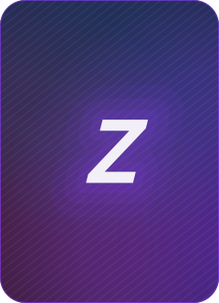

<!doctype html>
<html lang="fr"><head><meta charset="utf-8"><title>BoostZ icone halo</title>
<link rel="stylesheet" href="fonts/local.css">
<script src="posts-emblems.js"></script><script src="stickers.js"></script>
</head><body><script>
// Profile picture, tenth round (31/10/2026): after the Cardaround-like sheet
// (icone-bulle.html) the user wants to stay in BoostZ's own art direction,
// with the name written in full, « BoostZ », and Cardaround only as a light
// nudge (rounder, livelier letters, one sparkle). So: the dark grounds, the
// brand gradient, the wordmark's Z and its three ghost Zs, the app's fan of
// cards, the sticker rim of our posts; no coin in place of a letter.
// 1080 x 1080, everything inside the inscribed circle.
// Render: node rendu.mjs icone-halo.html images
// Twelfth round (31/10/2026): the user kept n° 03 of icone-classique.html (the
// strong halo) but found its four corner cards « trop géométrique bizarre ».
// Same word and halo; the cards in the ground are redrawn six ways.
// Eleventh round (31/10/2026): the user loved n° 01 of icone-mot.html (the
// Outfit wordmark written « BoostZ », flat, on the night ground) and asked for
// about ten variations of it.
const FONTS = ['BagelFatOne', 'Gluten', 'Sniglet-ExtraBold'];
document.head.insertAdjacentHTML('beforeend', `<style>${FONTS.map((f) => `@font-face{font-family:'${f}';src:url(fonts/${f}.ttf)}`).join('')}
.p { width: 1080px; height: 1080px; }</style>`);
const INKD = '#1B1330', V = '#7C3AED', ACC = '#C4B5FD';
const GRAD = 'linear-gradient(135deg,#FF4FA0,#8B3DFF 55%,#3AA9FF)';
let n = 0; const uid = () => 'm' + n++;
const S = []; const add = (id, html) => S.push([id, html]);
const OUT = 'Outfit';
// Grounds: the dark tokens with a violet glow, ghost card outlines near the rim.
const night = (glow = '#2B1758') => `<div class="abs" style="inset:0;background:radial-gradient(circle at 50% 44%, ${glow} 0%, #1B1330 42%, #0B0812 100%)"></div>`;
const cards = (c = 'rgba(255,255,255,.12)') => [[150, 150, 130, -16], [800, 120, 120, 14], [820, 790, 140, -10], [130, 800, 120, 12]].map(([x, y, w, r]) => `<div class="abs" style="left:${x}px;top:${y}px;width:${w}px;height:${w * 1.4}px;border:5px solid ${c};border-radius:${w * .16}px;transform:rotate(${r}deg)"></div>`).join('');
const flat = (bg) => `<div class="abs" style="inset:0;background:${bg}"></div>`;
// A sticker rim: dilate the letters in one colour, then one hard shadow.
const rimF = (id, rim, sh, r = 14, dx = 10, dy = 12) => `<svg width="0" height="0" style="position:absolute"><filter id="${id}" x="-20%" y="-30%" width="140%" height="160%"><feMorphology in="SourceAlpha" operator="dilate" radius="${r}" result="d"/><feFlood flood-color="${rim}"/><feComposite in2="d" operator="in" result="w"/><feOffset in="d" dx="${dx}" dy="${dy}" result="o"/><feFlood flood-color="${sh}"/><feComposite in2="o" operator="in" result="s"/><feMerge><feMergeNode in="s"/><feMergeNode in="w"/><feMergeNode in="SourceGraphic"/></feMerge></filter></svg>`;
// A four-point sparkle, placed in em inside a line (dx, dy from the line's top left).
const sp = (dx, dy, s, c) => `<svg viewBox="-1 -1 2 2" style="position:absolute;left:${dx}em;top:${dy}em;width:${s}em;height:${s}em;overflow:visible"><path d="M0 -1 Q.12 -.12 1 0 Q.12 .12 0 1 Q-.12 .12 -1 0 Q-.12 -.12 0 -1Z" fill="${c}"/></svg>`;
// The Boosties coin, standing in for an « o » (em-sized, sits on the baseline).
const B = 'M39.9 25.2 Q39.9 22.4 42.7 22.4 L44.3 22.4 Q47.1 22.4 47.1 25.2 L47.1 39.9 Q49.9 37.8 53.6 37.8 Q59.4 37.8 63.1 41.9 Q66.8 46 66.8 52.9 Q66.8 59.8 63.1 63.9 Q59.4 68 53.6 68 Q49.6 68 46.8 65.6 L46.8 65.7 Q46.6 68 44 68 L42.7 68 Q39.9 68 39.9 65.2 Z M53.2 44.4 Q50.1 44.4 48.2 46.7 Q46.3 49 46.3 52.9 Q46.3 56.8 48.2 59.1 Q50.1 61.4 53.2 61.4 Q56.3 61.4 58.2 59.1 Q60.1 56.8 60.1 52.9 Q60.1 49 58.2 46.7 Q56.3 44.4 53.2 44.4 Z';
const coin = (o = {}) => { const g = uid(), size = o.size || .6;
  return `<svg viewBox="0 0 100 100" style="width:${size}em;height:${size}em;vertical-align:${o.lift ?? -.03}em;margin:0 .015em;overflow:visible"><defs><linearGradient id="${g}" x1="0" y1="0" x2="1" y2="1"><stop offset="0" stop-color="#FFD84D"/><stop offset="1" stop-color="#E08A00"/></linearGradient></defs>
    <circle cx="50" cy="50" r="47" fill="url(#${g})"/><circle cx="50" cy="50" r="37" fill="none" stroke="rgba(255,255,255,.55)" stroke-width="4"/><g transform="translate(50 46) scale(1.25) translate(-53 -45)"><path d="${B}" fill="#fff"/></g></svg>`; };
// The app's fan of three cards, leaning off the top right of a letter.
const fan = (o = {}) => { const c = o.cards || ['#FF4FA0', '#8B3DFF', '#3AA9FF'], line = o.line || '#fff', k = (o.k || 1) * 1.3;
  const cd = (rot, fill, dx) => `<g transform="translate(${dx} 0) rotate(${rot} 50 120)"><rect x="34" y="10" width="34" height="48" rx="7" fill="${fill}" stroke="${line}" stroke-width="5"/></g>`;
  return `<svg viewBox="0 0 100 130" style="position:absolute;width:${.5 * k}em;left:${o.x ?? .62}em;top:${o.y ?? -.08}em;overflow:visible">${cd(-14, c[0], -6)}${cd(0, c[1], 0)}${cd(14, c[2], 6)}</svg>`; };
// The wordmark's three ghost Zs trailing left of the Z (blue, violet, pink).
const GH = [['#3AA9FF', -.59, .2], ['#8B3DFF', -.39, .32], ['#FF4FA0', -.185, .5]];
const BOUNCE = [[-.02, -5], [.03, 3], [-.03, -3], [.02, 4], [-.04, -4], [.02, 6]];
// One line of bouncing letters; the last one takes the Z colour.
const line = (size, font, o = {}) => { const letters = o.letters || ['B', 'o', 'o', 's', 't', 'Z'];
  return `<div style="position:relative;display:flex;align-items:baseline;line-height:1;font-family:'${font}';font-size:${size}px;letter-spacing:${o.ls ?? -.01}em;${o.css || ''}">${letters.map((ch, i) => {
    const [y, r] = o.flat ? [0, 0] : BOUNCE[(i + (o.shift || 0)) % 6], col = (o.colors || [])[i] || (i === letters.length - 1 ? (o.z || V) : (o.ink || NAVY));
    const tf = `display:inline-block;position:relative;z-index:${i === letters.length - 1 ? 0 : 1};transform:translate(0,${y}em) rotate(${r}deg);`;
    if (o.coins && o.coins.includes(i)) return `<span style="${tf}">${coin(o.coin || {})}</span>`;
    const paint = col.startsWith('linear') ? `background:${col};-webkit-background-clip:text;background-clip:text;color:transparent;` : `color:${col};`;
    const last = i === letters.length - 1, gh = last && o.ghosts ? GH.map(([c, l, op]) => `<span style="position:absolute;left:${l * (o.gs ?? .62)}em;top:0;color:${c};opacity:${op};${o.ghostCss || ''}">${ch}</span>`).join('') : '';
    return `<span style="${tf}">${gh}<span style="position:relative;${paint}${o.letterCss || ''}">${ch}</span>${i === letters.length - 1 && o.fan ? fan(o.fan) : ''}</span>`;
  }).join('')}${o.extra || ''}</div>`; };
// The lines stacked and centred; fit() then scales the whole block to fill the circle.
const mark = (lines, o = {}) => `<div class="mark" data-w="${o.w || 900}" data-d="${o.d || 480}" style="position:absolute;left:540px;top:540px;display:flex;flex-direction:column;align-items:center;gap:${o.gap ?? 0}px;${o.markCss || ''}">${lines.join('')}</div>`;
const one = (font, o = {}) => mark([line(200, font, o)], o);
const stack = (font, o = {}) => mark([line(200, font, { ...o, letters: ['B', 'o', 'o', 's', 't'], z: o.ink || NAVY, fan: null, extra: o.extra1 }), line(o.zs || 330, font, { ...o, coins: [], letters: ['Z'], ink: o.z || V, fan: o.fan, extra: o.extra2, css: `margin-top:${o.mt ?? -.12}em;margin-left:${o.zx ?? 1.1}em` })], o);
const outline = (c, w) => `-webkit-text-stroke:${w}px ${c};`;
const shadow = (c, d) => `text-shadow:${Array.from({ length: d }, (_, i) => `${i + 1}px ${i + 1}px 0 ${c}`).join(',')};`;
// rendu.mjs calls window.pixelate once the fonts are in: here it scales each
// mark so its whole drawn extent (fan and sparkles included) is centred and
// inside the profile circle, as wide as data-w and with a half-diagonal of data-d.
window.pixelate = () => document.querySelectorAll('.mark').forEach((m) => {
  const box = (el) => [...el.querySelectorAll('span > span, path, rect, circle')].map((e) => e.getBoundingClientRect()).filter((r) => r.width).reduce((a, r) => [Math.min(a[0], r.left), Math.min(a[1], r.top), Math.max(a[2], r.right), Math.max(a[3], r.bottom)], [1e9, 1e9, -1e9, -1e9]);
  const [l, t, r, b] = box(m), w = r - l, h = b - t, k = Math.min(+m.dataset.w / w, 2 * +m.dataset.d / Math.hypot(w, h));
  const p = m.parentElement.getBoundingClientRect(), dx = (l + r) / 2 - (p.left + 540), dy = (t + b) / 2 - (p.top + 540);
  m.style.transformOrigin = '0 0';
  m.style.transform = `translate(${-dx * k}px, ${-dy * k}px) scale(${k})`;
  m.dataset.k = k.toFixed(2);
});


const W = { ink: '#fff', z: GRAD, ghosts: true, gs: 1, flat: true, ls: -.02 };
const SK = 'transform:skewX(-8deg);font-weight:800;';
const m1 = (o = {}, mo = {}) => mark([line(200, 'Outfit', { ...W, css: SK, ...o })], mo);
const SP1 = sp(-.3, .02, .26, ACC);
// A dashed arc under the word, in the empty bottom band (never on the text).
const dash = (c = 'rgba(196,181,253,.45)') => `<svg class="abs" width="1080" height="1080" style="left:0;top:0"><path d="M250 760 Q540 880 830 760" fill="none" stroke="${c}" stroke-width="8" stroke-linecap="round" stroke-dasharray="4 26"/></svg>`;
// The app's fan, faint and large, behind the word.
const ghostFan = (op = .1) => `<svg class="abs" width="1080" height="1080" style="left:0;top:0">${[[-16, -150], [0, 0], [16, 150]].map(([r, dx]) => `<g transform="translate(${540 + dx} 560) rotate(${r})"><rect x="-160" y="-225" width="320" height="450" rx="36" fill="none" stroke="#fff" stroke-opacity="${op}" stroke-width="6"/></g>`).join('')}</svg>`;
const BACK = `<div class="abs" style="inset:0;background:url(assets/dos-boostz.svg) center/cover;opacity:.16"></div>`;

const HALO = `<div class="abs" style="left:240px;top:390px;width:600px;height:300px;border-radius:50%;background:#8B3DFF;opacity:.35;filter:blur(90px)"></div>`;
const G03 = (cardsHtml) => `${night('#4A1FA0')}${cardsHtml}${HALO}${m1({ extra: SP1 })}`;
// One card in the ground. kind: glass (frosted fill, thin light edge), line, back (the BoostZ card back).
const fc = (x, y, w, rot, o = {}) => { const { kind = 'glass', blur = 0, op = 1, edge = 'rgba(255,255,255,.22)', origin = 'center' } = o, h = w * 1.4, r = w * .11;
  const inner = kind === 'back' ? `` : '';
  const look = kind === 'back' ? `border:${w * .035}px solid rgba(255,255,255,.85);` : kind === 'line' ? `border:4px solid ${edge};` : `background:linear-gradient(160deg, rgba(255,255,255,.13), rgba(255,255,255,.03));border:3px solid ${edge};box-shadow:inset 0 0 ${w * .2}px rgba(196,181,253,.12);`;
  return `<div class="abs" style="left:${x - w / 2}px;top:${y - h / 2}px;width:${w}px;height:${h}px;border-radius:${r}px;${look}transform-origin:${origin};transform:rotate(${rot}deg);opacity:${op};filter:blur(${blur}px);overflow:hidden">${inner}</div>`; };

// A - Floating: cards of several sizes at several depths, some cut by the rim.
add('01-flottantes', G03([[190, 250, 150, -18, 3, .7], [880, 230, 120, 16, 5, .55], [930, 830, 170, -12, 0, .9], [120, 760, 110, 22, 6, .5], [650, 150, 90, 8, 7, .4], [360, 900, 140, -8, 2, .7], [770, 930, 90, 26, 6, .45]].map(([x, y, w, r, bl, op]) => fc(x, y, w, r, { blur: bl, op })).join('')));
// B - The app's fan, rising from behind the word and lit by the halo.
add('02-eventail-halo', G03([[-22, -30], [0, 0], [22, 30]].map(([r, dx]) => fc(540 + dx, 500, 280, r, { origin: '50% 100%', edge: 'rgba(216,200,255,.35)', op: .7 })).join('')));
// C - Real BoostZ card backs, out of focus, in the top and bottom bands.
add('03-dos-flous', G03([[180, 230, 170, -16, 5, .45], [900, 250, 150, 14, 7, .4], [930, 820, 190, -10, 4, .5], [150, 840, 150, 18, 8, .35], [540, 960, 130, 4, 9, .3], [560, 110, 110, -6, 10, .28]].map(([x, y, w, r, bl, op]) => fc(x, y, w, r, { kind: 'back', blur: bl, op })).join('')));
// D - A hand of cards opening in an arc under the word.
add('04-main-en-arc', G03(Array.from({ length: 7 }, (_, i) => { const a = (i - 3) * 13, rad = a * Math.PI / 180; return fc(540 + Math.sin(rad) * 640, 1400 - Math.cos(rad) * 520, 190, a, { op: .85, edge: 'rgba(216,200,255,.3)' }); }).join('') + Array.from({ length: 5 }, (_, i) => { const a = (i - 2) * 15 + 180, rad = a * Math.PI / 180; return fc(540 + Math.sin(rad) * 620, -300 - Math.cos(rad) * 520, 160, a, { op: .45, blur: 3 }); }).join('')));
// E - Cards drifting down the diagonal, smaller and softer as they go far.
add('05-pluie', G03([[150, 170, 180, -24, 0, .85], [330, 90, 90, 12, 6, .4], [880, 300, 110, 30, 5, .5], [960, 560, 70, -20, 8, .35], [800, 860, 170, 18, 1, .8], [980, 960, 110, -14, 4, .55], [170, 840, 100, 34, 6, .45], [560, 990, 80, -30, 8, .35]].map(([x, y, w, r, bl, op]) => fc(x, y, w, r, { blur: bl, op })).join('')));
// F - One large card standing behind the word, its edge lit in the brand gradient.
add('06-grande-carte', G03(`<div class="abs" style="left:325px;top:240px;width:430px;height:600px;border-radius:46px;padding:5px;background:${GRAD};transform:rotate(-8deg);opacity:.55;box-shadow:0 0 80px rgba(139,61,255,.45)"><div style="width:100%;height:100%;border-radius:42px;background:linear-gradient(160deg,#2A1458,#140B2A)"></div></div>${fc(185, 250, 110, -20, { blur: 5, op: .45 })}${fc(900, 840, 120, 16, { blur: 5, op: .45 })}`));


carousel(S);
</script></body></html>
